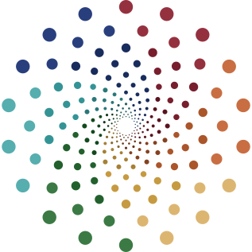

Digital credentials that go where you go
Portable, private and instantly verifiable.
A diploma, certificate, license or badge can now carry its own proof, along with rich detail about the skills behind it. Share it, and anyone can check that it’s real.
Formerly the Digital Credentials Consortium at MIT, now hosted by Strada Education Foundation.
Checking…
- Issued by Riverbend Community College
- Hasn’t been tampered with
- Still valid
How it works
A digital credential is a record of something you’ve accomplished, such as a degree, a completed course or a job you’ve held. The organization behind it signs it digitally, and that signature stays attached to the record.
- You receive it.A school, training program or employer issues the credential to you.
- You keep it.It goes into a digital wallet with your other credentials, and you decide who sees it.
- You share it.Send it to an employer, a school or anyone else. They can check it themselves, on the spot.
That’s why it’s called a verifiable credential. Because it’s built on open standards, it can be checked anywhere, not only where it was issued.
Try it yourself
The quickest way to understand a digital credential is to hold one. Tell us your name and email, and we’ll send you a sample credential to add to Learner Credential Wallet on your phone.
This is a demo. The sample credential is for trying things out and doesn’t record a real achievement.

Sample credential LCW Experience Badge Issued by Digital Credentials CommonsOur work
At the center of our work is a simple goal: empowering learners to have real access to and control over their credential data, so they can store and share their achievements wherever opportunity takes them.
Digital Credentials Commons brings together the people and organizations working toward that goal and helps advance understanding and adoption of digital credentials. If you’re new to this, we’ll help you figure out where to start.
We help shape the standards
Standards are shaped by whoever takes part. We take part on behalf of learners, the organizations that serve them and the vendors that build for them, in the W3C Verifiable Credentials for Education Task Force, the W3C Credentials Community Group and 1EdTech’s work on Open Badges.
We build open-source software
Everything we build is freely available and open source. You’ll find all of it at github.com/digitalcredentials.
A wallet for keeping and sharing your credentials on your phone, for iOS and Android. We’re also building a new web version. Get in touch to hear more about it.
A free website for checking whether a credential is real, with no account needed.
Tools for issuing credentials from your own systems, either as a standalone service or built into software you already run.
A secure, API-based way to store and share digital credentials. We wrote the specification, now hosted by the W3C Credentials Community Group, and the new web version of Learner Credential Wallet is being built on it.
We run shared services
Today that means the Issuer Identity Registry, which helps anyone checking a credential confirm who issued it. Learner Credential Wallet and VerifierPlus check it automatically.
Beyond education
Verifiable credentials began as a way for people to carry records of what they’d learned, but the approach works for anything that matters: a professional license, an employment record, a permit. In California, for example, the DMV’s digital driver’s license is also available as a verifiable credential. We focus on learning and work because that’s where our community is. The standards we help shape, and the software and services we develop, apply far more widely.
About
The Digital Credentials Consortium was founded in 2018 at MIT Open Learning by universities across North America, Europe and Asia. Together they built shared infrastructure for issuing, keeping and checking digital credentials.
Today it continues as the Digital Credentials Commons, hosted by Strada Education Foundation, and works with a growing network of partners across education, employment and technology.
A commons is something a community builds and looks after together, and that everyone can have access to. Our software, research and standards work are open to all, and anyone can report a problem, contribute code or join the open W3C groups we take part in. We don’t sell credentials. We build open tools that schools, employers, governments and vendors can all use and build on.
Get in touch
Tell us who you are and what you’re interested in. We’ll follow up with news, resources and, if you’d like, a time to talk.